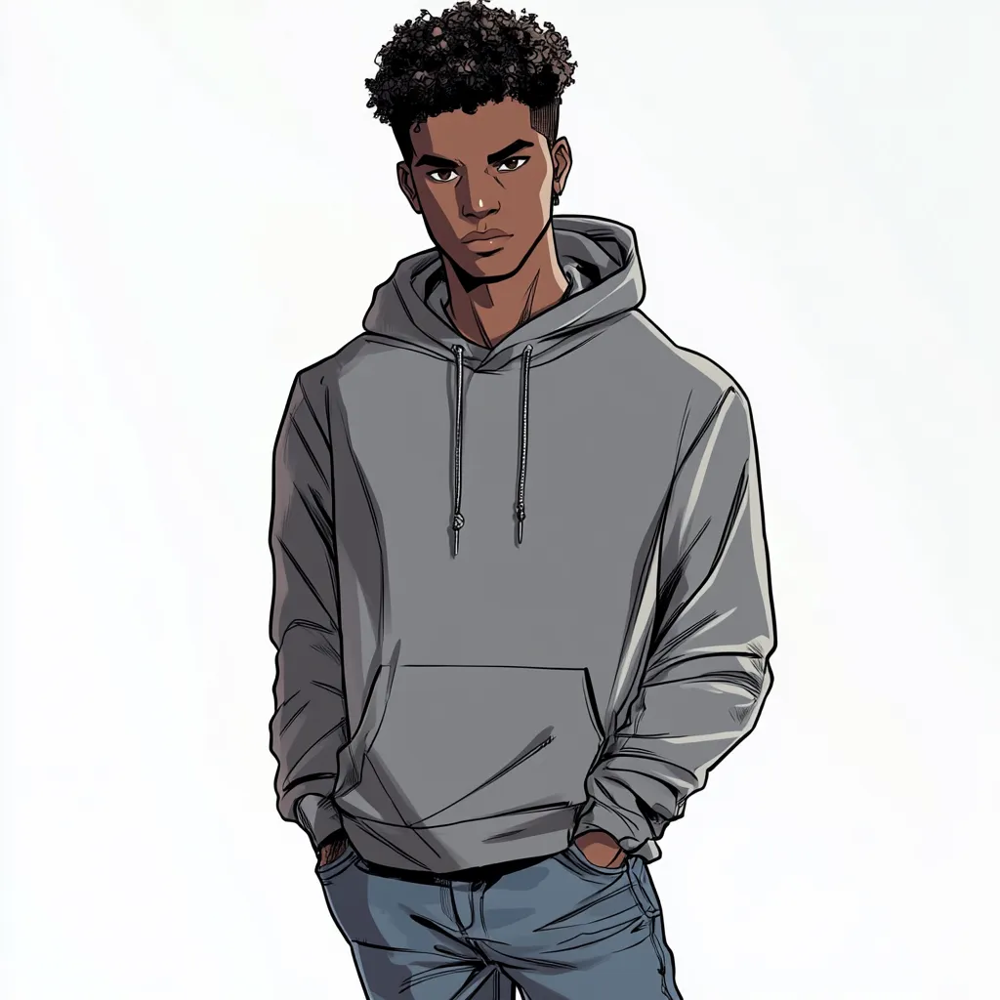

Operative Dossier /// Classified — Cell Eyes Only /// File: XF-006
+
+
+
+

XF-006
// Operative Codename //
Regret
Mohamed Salem
5'10"
168 lbs
Male
Brown Eyes
Black Hair
Age 16
Origin: Mutant
Occupation: Adventurer
Telepathy
X-FRONT · Member · Houston, TX · < 1 Year
Rank 2 / Karma 2
Left Home — Houston
History
Mohamed left home in Houston before he could be kicked out. His parents still don't know he's a mutant — he fled on his own terms, or as close to his own terms as a sixteen-year-old can manage.
He feels deeply conflicted about his telepathic power, which he regards as inherently coercive. He left home in part out of fear that he couldn't trust his parents' acceptance of him — and in part because he didn't trust what he might unconsciously do with a mind-reader's reach in a home that might reject him.
Been with X-FRONT less than a year. Supportive of Toya's leadership from the start. Participated directly in the rescue operation that brought Hermes out of the conversion camp.
Active participant in the operation to extract Hermes Montoya (XF-005) from Sanctuary Hills Youth Reformation Campus. Four months prior to current operations.
Psych Profile
Personality
Deeply emotionally intelligent. Balanced between emotion and intellect. Soft-spoken, but speaks and acts decisively when it matters.
Goal
Has genuine hope for a world of mutant-human acceptance. Sees X-FRONT's direct action as a temporary necessity — and looks forward to the day it can be disbanded.
Barrier
The present is not that time. The injustices that X-FRONT exists to confront cannot wait for gradual resolution. He holds both truths simultaneously, and that tension is the weight he carries.
Power Guilt
Considers telepathy coercive by nature. Has ongoing ethical concerns about using it — even in combat, even against enemies. Uses it anyway, because the alternative is worse.
Ability Scores
Melee
1
DEF 11 / +1
Agility
1
DEF 11 / +1
Resilience
3
DEF 13 / +3
Vigilance
4
DEF 14 / +4
Ego / Logic
3
DEF 13 / +3
Durability
30
DMG Reduction: —
90
DMG Reduction: —
Run 5
Climb 3
Swim 3
Jump 3
Initiative +3
Damage Output
d×2+1
Melee
d×2+1
Agility
d×2+4
Ego
d×2+3
Logic
All telepathic attacks deal Focus damage, not Health damage.
Primary threat: Ego/Logic attacks against targets' mental defenses.
Primary threat: Ego/Logic attacks against targets' mental defenses.
Telepathy Powers
"I don't want to be in anyone's head without their consent. The fact that I can doesn't mean I should. But sometimes the world makes the choice before I do."
◈ Connection — Establishing the Link
Telepathic Link
Telepathy · Link
Communicate telepathically with one person at a time — verbal, visual, or complex (e.g. location data). Must have previously met or seen the target. If the target doesn't wish to communicate, they can automatically tune him out.
To force a link: Logic check vs. target's Vigilance defense. On failure: cannot attempt communication with that target for the rest of the day. On success: can communicate for the duration of concentration. On Fantastic success: target cannot shut him out for the rest of the day.
To force a link: Logic check vs. target's Vigilance defense. On failure: cannot attempt communication with that target for the rest of the day. On success: can communicate for the duration of concentration. On Fantastic success: target cannot shut him out for the rest of the day.
◈ Mind — Reading & Interrogation
Mind Reading
Telepathy · Mind
Logic check vs. target's Logic defense. On success: read the target's surface thoughts. On Fantastic success: ask a single simple question — get the answer from the target's mind directly.
Mind Interrogation
Telepathy · Mind
Logic check vs. target's Logic defense. On success: ask a single simple question — get the answer from the target's mind. On Fantastic success: extract more complex information.
◈ Combat — Psychic Attacks
Mental Punch
Telepathy · Combat
Melee attack against a target. On success: inflicts regular Focus damage (not Health). On Fantastic success: double Focus damage, and target is Stunned for one round.
Telepathic Blast
Telepathy · Combat
Logic attack against a target in line of sight. On success: regular Focus damage. On Fantastic success: double Focus damage and target is Stunned for one round.